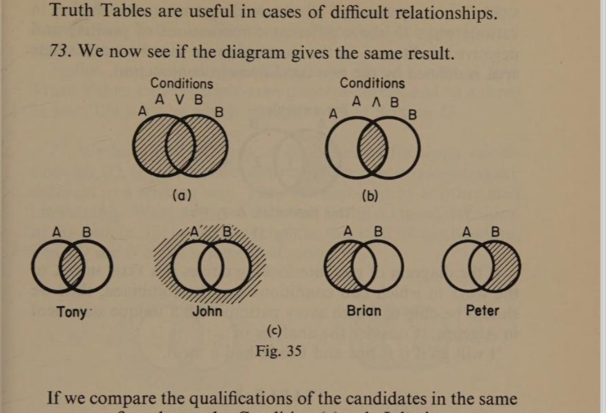
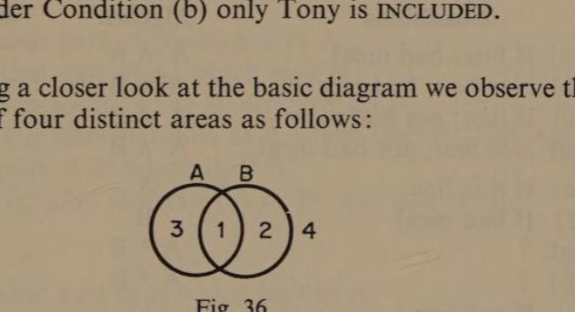
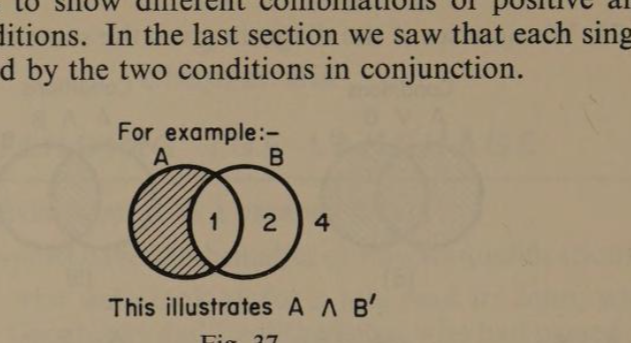
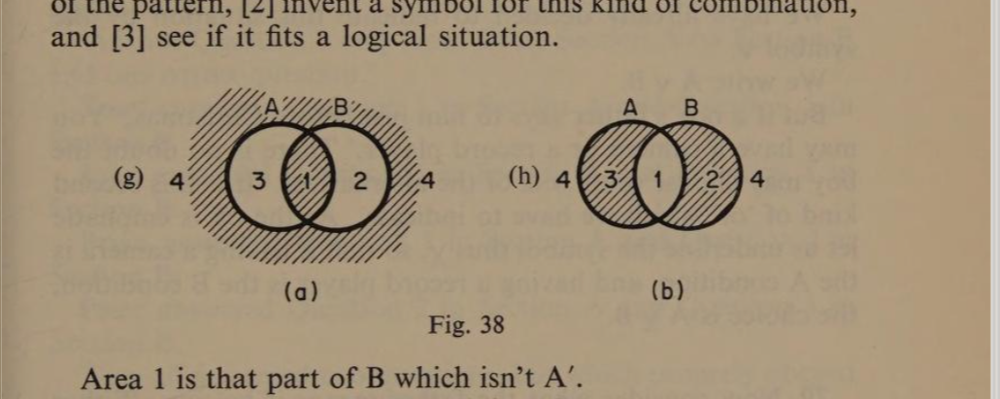
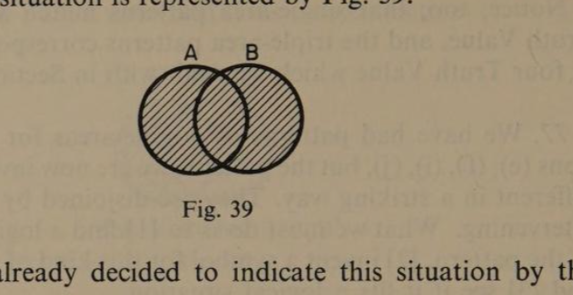
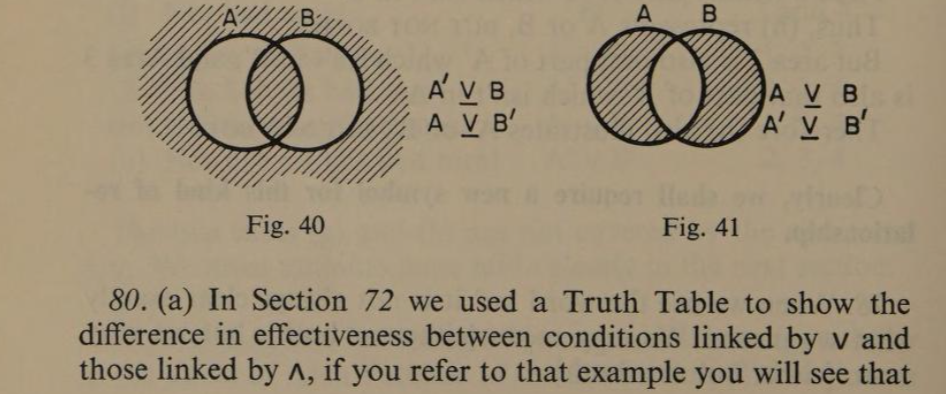
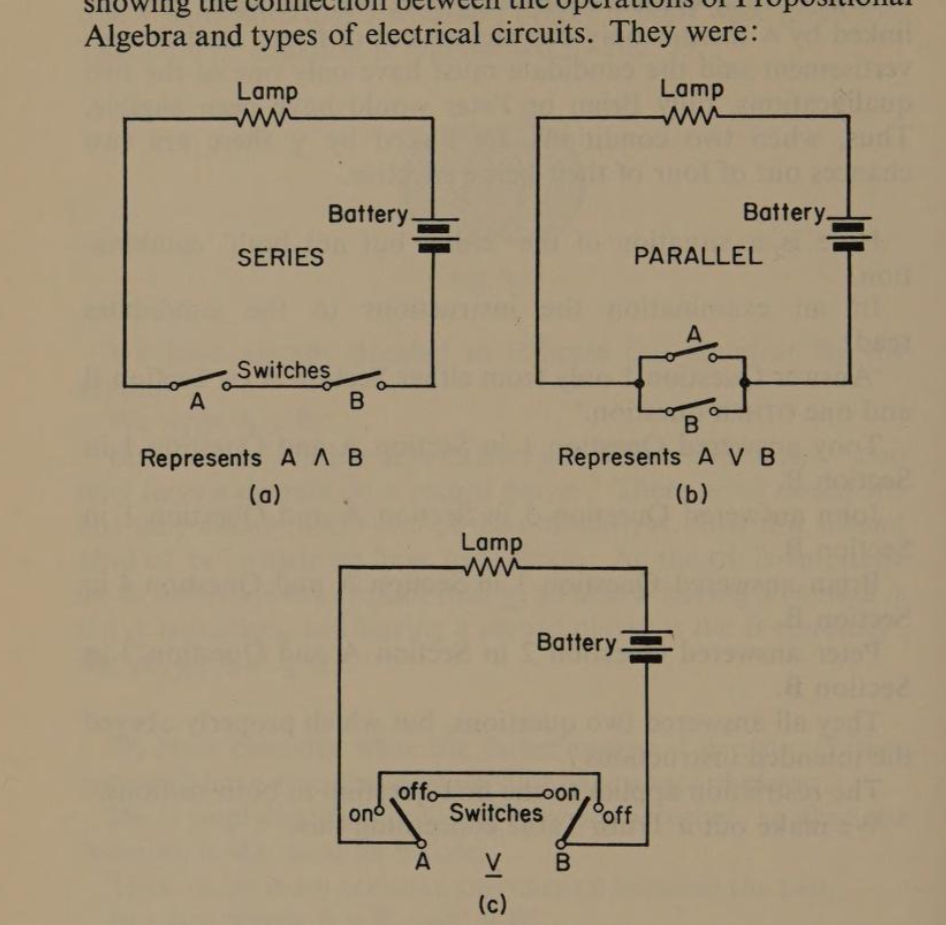
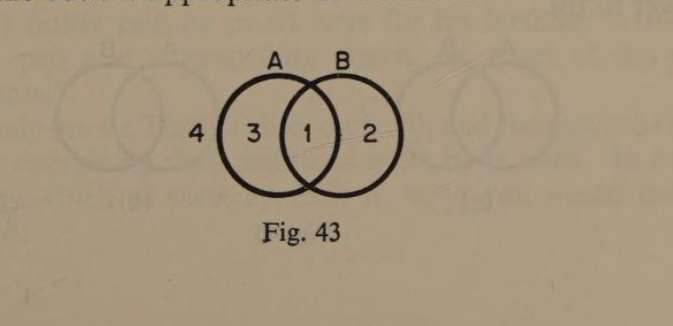
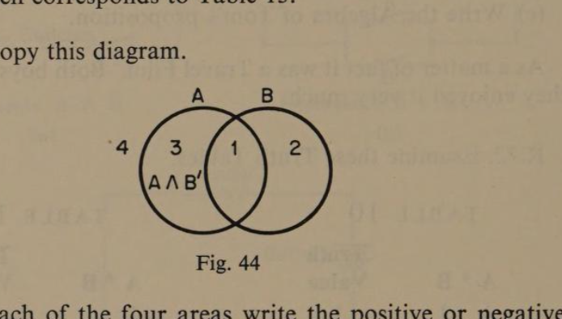
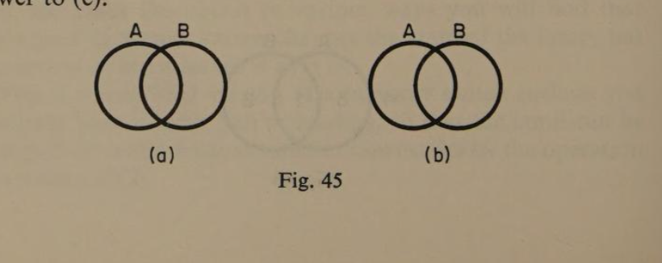

Chapter Six
Extending the Language
page 6071. In an advertisement of a vacancy it said:
‘Candidates must have Mathematics or Physics qualifications.’
Four boys, who were looking for a job, read it: John, who had passed in Geography and English; Peter, who had passed in Physics and Chemistry; Brian, whose certificate was for Maths, and English; and Tony, who had passed in Physics and Maths. It is easy enough to decide who could apply. Peter could as he had Physics: Brian because he had Mathematics: Tony because he had both: but John couldn’t as he had neither. Had the advertisement said, ‘the candidate must have Maths and Physics’, then Tony would have been the only one eligible.
Thus, you see how A ∧ B is more restrictive than A ∨ B.
72. By setting out the positive and negative forms of the two conditions in as many ways as possible we can examine their joint effect upon a proposition.
| TONY | A | B |
| JOHN | A′ | B′ |
| BRIAN | A | B′ |
| PETER | A′ | B |
Note: If the operator is ∨ any row having a positive is effective. If the operator is ∧ there must be as many positives as conditions.
Using the symbols 1 and 0 we could make out a ‘Truth Table’.
| Conditions A ∨ B | Truth Value | Conditions A ∧ B | Truth Value | |||
|---|---|---|---|---|---|---|
| TONY | 1 | 1 | 1 | 1 | 1 | 1 |
| JOHN | 0 | 0 | 0 | 0 | 0 | 0 |
| BRIAN | 1 | 0 | 1 | 1 | 0 | 0 |
| PETER | 0 | 1 | 1 | 0 | 1 | 0 |
page 61 Truth Tables are useful in cases of difficult relationships.
73. We now see if the diagram gives the same result.

If we compare the qualifications of the candidates in the same way we confirm that under Condition (a) John is excluded and that under Condition (b) only Tony is included.
74. Taking a closer look at the basic diagram we observe that it consists of four distinct areas as follows:

Areas one, two, and three are inside. While 4 is one outside and surrounding the diagram. Each single area is defined by the conjunction of the conditions in one of the possible variations as shown below.
| AREA 1 | A ∧ B |
| AREA 2 | A′ ∧ B |
| AREA 3 | A ∧ B′ |
| AREA 4 | A′ ∧ B′ |
75. page 62 The four areas of the diagram can be shaded in various ways to show different combinations of positive and negative conditions. In the last section we saw that each single area is defined by the two conditions in conjunction.

If the diagram of two interlocking circles is a true model of the ways in which two conditions may be combined, then we should be able to match every pattern with a unique statement in Algebra. Consider the analysis of:
‘I will go if it is fine and I have had a meal.’
| Variations of Related Conditions | Corresponding Algebra | Areas to be Shaded |
|---|---|---|
| (a) If fine: had meal | A ∧ B | 1 |
| (b) Not fine: had meal | A′ ∧ B | 2 |
| (c) If fine: not had meal | A ∧ B′ | 3 |
| (d) Not fine: not had meal | A′ ∧ B′ | 4 |
| (e) If it is fine | A | 1 and 3 |
| (f) If had meal | B | 1 and 2 |
| (g) ? | A * B | 1 and 2 |
| (h) ? | A * B | 2 and 3 |
| (i) If not fine | A′ | 2 and 4 |
| (j) Not had meal | B′ | 3 and 4 |
| (k) If fine OR had meal | A ∨ B | 1, 2, 3 |
| (l) Not fine OR had meal | A′ ∨ B | 1, 2, 4 |
| (m) If fine OR not had meal | A ∨ B′ | 1, 3, 4 |
| (n) Not fine OR not had meal | A′ ∨ B′ | 2, 3, 4 |
The two cases (g) and (h) are not covered by the operators ∧/∨. We must examine these more closely in the next section.
76. The diagrams in Section 77 correspond to lines (g) and (h) in the Table of Area Patterns of the last section (Table 8).page 63 It is clear they cannot represent the operation ∧ as this gives a single-area pattern. Nor can they represent the operation ∨ as this gives a triple-area pattern.
Notice, too, that single-area patterns match a one in four Truth Value, and the triple-area patterns correspond to a three in four Truth Value which we will deal with in Section 72.
77. We have hatched patterns of double-areas for single conditions (e), (f), (i), (j), but the patterns we are now investigating are different in a striking way. They are disjoined by another area intervening. What we must do is to [1] find a logical definition of the pattern, [2] invent a symbol for this kind of combination, and [3] see if it fits a logical situation.

Area 1 is that part of B which isn’t A′. Area 4 is that part of A′ which isn’t B. Thus, (g) represents A′ or B, but not both. But Area 1 is also that part of A which isn’t B′, and Area 4 is also that part of B′ which isn’t A. Therefore (g) also illustrates A or B′, but not both.
Area 2 is that part of B which isn’t A. Area 3 is that part of A which isn’t B. Thus, (h) represents A or B, but not both. But Area 2 is also that part of A′ which isn’t B′, and Area 3 is also that part of B′ which isn’t A′. Therefore (h) also illustrates A′ or B′, but not both.
Clearly, we shall require a new symbol for this kind of relationship.
78. When we use the word ‘or’ it is not always clear exactly what we mean. We may mean [either or both], but we may mean [either but not both].page 64 If I say, ‘I would like a football or some shin-guards,’ I imply that I need both and I wouldn’t object if both were given me. This kind of situation is represented by Fig. 39.

We have already decided to indicate this situation by the symbol ∨. We write it as A ∨ B.
But if a boy’s father says to him just before Christmas, ‘You may have a camera or a record player.’ There is no doubt the boy may choose only one of the alternatives. It is this second kind of ‘or’ which we have to indicate. As the or is emphatic let us underline the symbol thus ⊻, so that if having a camera is the A condition, and having a record player is the B condition, the choice is A ⊻ B.
79. Now consider what the father means if he says, ‘Either you can’t have a camera or you can’t have a record player.’ He is implying the choice of one or the other, so that the meaning is the same as before. Thus, there is no logical difference between the two. In other words A ⊻ B = A′ ⊻ B′. That is why each of these diagrams has two algebraic equivalents.

80. (a) In Section 72 we used a Truth Table to show the difference in effectiveness between conditions linked by ∨ and those linked by ∧, if you refer to that example you will see thatpage 65 when two conditions are related by ∨ there are three chances out of four of their combination being effective, but when they are linked by ∧ there is only one chance out of four. Had the advertisement said the candidate must have only one of two qualifications, only Brian or Peter would have been eligible. Thus, when two conditions are linked by ⊻ there are two chances out of four of their being effective.
Here is a situation of the ‘either but not both’ combination. In an examination the instructions to the candidates read:
‘Answer Question 1 only from either Section A or Section B and one other Question.’
Tony answered Question 1 in Section A and Question 1 in Section B.
John answered Question 3 in Section A and Question 1 in Section B.
Brian answered Question 1 in Section A and Question 4 in Section B.
Peter answered Question 1 in Section A and Question 3 in Section B.
They all answered two questions, but which properly obeyed the intended instructions? The restriction applies to the first question in both sections. We make out a Truth Table concerning this.
| Conditions A ⊻ B | Truth Value | ||
|---|---|---|---|
| TONY | 1 | 1 | 0 |
| JOHN | 0 | 1 | 1 |
| BRIAN | 1 | 0 | 1 |
| PETER | 0 | 0 | 0 |
Only John and Brian properly obeyed the instructions. When the exclusive or is intended it is often emphasised. This may help you to recognise the difference between ∨ and ⊻.
80. (b) page 66 In Chapter Four, Section 53 there was a diagram showing the connection between the operations of Propositional Algebra and types of electrical circuits. They were:

If electrical circuits are to be used as physical models of this Algebra we will need one to represent our new operator ⊻. As this operator means ‘either but not both’ the circuit will have to allow either switch to operate the lamp, but if both are operated they should ‘cancel out’. Examine the circuit in Fig. 42(c).
If you trace the circuit in various ways you will find that movement of either switch changes the state of the lamp, but movement of both leaves it as it is. This is a simplified version of a two-way switch such as you probably have in your hall or landing, so that the lamp can be switched on or off from upstairs or downstairs by the operation of either switch.
Sixth Review
R.71. The show at the local cinema was advertised as: ‘going west. An adventure film for young and old.’ Two boys had been discussing whether they would go. Jack had said, ‘I’ll go if it is a Technicolor Western.’ Tom had said, ‘I’ll go if it’s a Cowboy film.’
(a) Which of the boys was more likely to go?
(b) Write the Algebra of Jack’s proposition.
(c) Write the Algebra of Tom’s proposition.
As a matter of fact it was a Travel Film. Both boys went and they enjoyed it very much.
R.72. Examine these Truth Tables.
| A * B | Truth Value | |
|---|---|---|
| 1 | 1 | 1 |
| 0 | 1 | 0 |
| 1 | 0 | 0 |
| 0 | 0 | 0 |
| A * B | Truth Value | |
|---|---|---|
| 1 | 1 | 1 |
| 0 | 1 | 1 |
| 1 | 0 | 1 |
| 0 | 0 | 0 |
(a) What operator does the asterisk stand for in Table 10?
(b) What operator does the asterisk stand for in Table 11?
(c) Analyse the following statement: ‘John said he would leave school if he did not pass his exam. and he got a job before the new term began.’ Then write the Algebra of this proposition.
(d) Copy and shade Fig. 43 to represent John’s proposition.
(e) Make out the appropriate Truth Table.

R.73.
| Area | A′ ∧ B | Value | |
|---|---|---|---|
| 1 | 0 | 0 | 0 |
| 2 | 1 | 1 | 1 |
| 3 | 0 | 0 | 0 |
| 4 | 1 | 0 | 0 |
| Area | A ∧ B | Value | |
|---|---|---|---|
| 1 | 1 | 1 | 1 |
| 2 | 0 | 1 | 0 |
| 3 | 1 | 0 | 0 |
| 4 | 0 | 0 | 0 |
Refer to the diagrams of the boys’ qualifications and say:
(a) Which corresponds to Table 12.
(b) Which corresponds to Table 13.
R.74. Copy this diagram.

(a) In each of the four areas write the positive or negative forms of A,B, which it represents. Area 3 has been done as a guide for you.
(b) How many areas have to be shaded to represent two conditions effective together?
(c) How many areas have to be shaded to illustrate two conditions either or both of which are fully effective?
R.75. (a) How many different patterns of shaded areas are possible using two interlocking circles?
(b) Is the number of different ways of making patterns listed in the table of Section 75 complete?
(c) What others can you think of?
(d) Copy these diagrams and use them to illustrate your answer to (c).

R.76. (a) and (b) Of the fourteen different area patterns listed in Section 75 there were only two which could not be matched by Single Conditions, or by Double Conditions linked by ∨/∧. Say which these were, and illustrate your answers.
R.77. (a) What three steps are suggested to deal with them?
(b) Write the Algebra for [A or B, but not both].
(c) Write the Algebra for [A′ or B, but not both].
R.78. (a) Write the Algebra for the logical relationships of the conditions in this statement: ‘You may not go to the cinema tonight or you may not go on Saturday.’
(b) Write the Algebra for this: ‘You may go either tonight or on Saturday.’
(c) Draw the diagrams representing (a) and (b).
R.79. Read carefully the propositions you dealt with in the last question, and refer to your translation of them into Algebra and your diagrams.
(a) What can you say about the logic of both?
(b) Express your answer to 79 (a) in Algebra.
If you find this last question difficult consult Section 79 again.
R.80. (a) In a competition it was stated that the first prize would be a washing machine or its value in cash. Write the Algebra of this statement.
(b) When we are considering two conditions we use A/B to represent them. If we had to consider three conditions, what should we use to represent the third?
(c) Sometimes it is necessary to look upon two conditions as though they were one in relation to a third. To indicate this we enclose them in brackets as in this case: [A * B]. Consider this situation carefully, and then see if you can express it clearly in Algebra. ‘John’s father said he could have for his birthday either a fountain pen and a propelling pencil, or a set of drawing instruments.’
(d) Study the six Truth Tables on p. 70, and then say what the operator combining the conditions must be in each. In other words say which of these symbols ∧, ∨, ⊻, you would use in place of *.
| [i] A * B | Truth | [ii] A * B | Truth | [iii] A * B | Truth |
|---|---|---|---|---|---|
| 1 1 | 1 | A B | 0 | A B | 1 |
| 0 1 | 1 | A′ B | 1 | A′ B | 0 |
| 1 0 | 1 | A B′ | 1 | A B′ | 0 |
| 0 0 | 0 | A′ B′ | 0 | A′ B′ | 0 |
| [iv] A * B | Truth | [v] A * B | Truth | [vi] A * B | Truth |
|---|---|---|---|---|---|
| 1 1 | 0 | 1 1 | 1 | A B | 1 |
| 0 1 | 1 | 0 1 | 0 | A′ B | 1 |
| 1 0 | 1 | 1 0 | 0 | A B′ | 1 |
| 0 0 | 0 | 0 0 | 0 | A′ B′ | 0 |